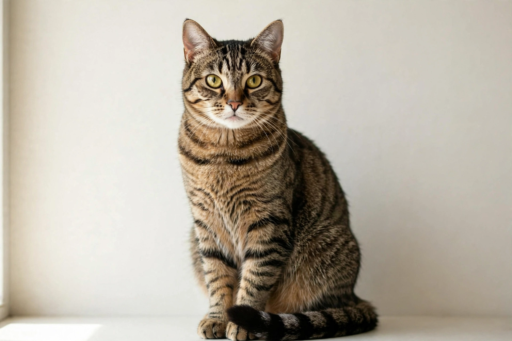

cat
Pronunciation: /kæt/. Etymology: from Old English catt, catt(e), ultimately from Latin cattus / catta. Noun: (1) The domestic cat, Felis catus, a small carnivorous mammal kept as a pet or for catching mice. (2) Any member of the cat family (Felidae), such as a lion or tiger, in compounds and informal use. (3) Various other senses, including nautical and slang uses, each with quotations.

[Image: Photograph of a domestic tabby cat]
Derived terms
Cat flap, catnap, copycat, fat cat, let the cat out of the bag and many more are listed, with translations of the animal sense into dozens of languages.